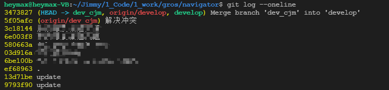
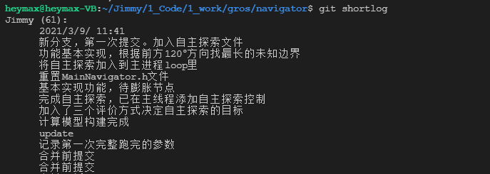

1、获取SSH-Key 生成SSH-Key 1 2 3 4 $ ssh-keygen -t rsa -C "youremail@youremail.com"
查看SSH-Key 1 2 $ cat ~/.ssh/id_rsa.pub
2、设置用户信息 1 2 $ git config --global user.name "yourname" $ git config --global user.email "youremail@youremail.com"
3、初始化本地库 客户仓库 1 $ git clone <repository-url>
本地添加远程仓库 1 2 $ git init $ git remote add origin <远程仓库地址>
4、更新到远程仓库 1 2 3 4 $ git add . $ git commit -m "一些注释说明" $ git push origin master $ git push -f origin master
工作区到暂存区 -> add
从暂存区取消暂存 -> restore –staged
工作区更改，未暂存，取消工作区的更改 -> restore
5、单个文件回退 1、查看文件的更改日志 1、查看文件的全部更改日志 2、查看文件最近n条日志 1 $ git log -n [file name]
2、文件已修改，未暂存（未执行add） 1 $ git restore [file name] //执行后直接更改工作区
3、文件已修改，已暂存（已执行add，但是未commit） 1、取消暂存 1 $ git restore --staged [file name]
或者使用
1 2 $ git reset HEAD [file name] $ git reset [file name]
2、恢复到工作区 1 $ git restore [file name]
4、文件已提交，回退到某一个提交节点 1、先获取要回退的commit-id 或者
2、从本地版本库中拉取到暂存区 1 $ git reset <commit-id> [file name]
执行后查看status，会出现一个暂存状态，一个更改状态
暂存区现在存放的是回退前的状态
更改状态是因为本地工作区与暂存区里的内容不一致
3、放弃暂存，恢复到回前状态 直接执行add
或者执行
1 $ git restore --staged [file name]
放弃暂存区
4、放弃本地的更改 放弃本地的更改，使回退生效
1 $ git restore [file name]
但是暂存区的更改还存在，再执行一次add和commit
6、分支操作 1、展示本地分支关联远程的操作 2、列出所有远程分支 4、列出本地和远程的分支 5、查看本地分支与远程的关系 1 $ git remote show origin
6、查看本地分支 7、创建本地分支 1 $ git branch <branch name>
8、创建本地分支并切换到该分支 1 $ git checkout -b <branch name>
9、删除本地分支 1 $ git branch -d <branch name>
10、切换分支 1 $ git checkout <branch name>
或
1 $ git switch <branch name>
11、创建远程分支 1 $ git push origin <local branch name>:<remote branch name>
12、删除远程分支 1 $ git push origin :<remote branch name> // 推送一个空的本地分支到远程分支上，相当于删除
或
1 $ git push origin --delete <remote branch name>
13、关联远程分支 1 $ git branch –set-upstream <local branch name> origin/<remote branch name>
7、忽略文件 以 .gitignore 文件用以列出忽略的文件。
1、格式规范
所有空行或者以 # 开头的行都会被GIT忽略；
可以使用标准的glob 模式匹配，它会递归地应用在整个工作区中；
匹配模式可以以 / 开头防止递归;
匹配模式可以以 / 结尾指定目录;
要忽略指定模式以外的文件或目录，可以在模式前加上叹号 ! 取反;
glob模式：
* : 匹配多个任意字符；[abc] : 匹配 [ ] 里所列出的任意字符。[abc] 要么匹配 a，要么匹配 b， 要么匹配 c；? : 只匹配一个字符；[0-9] : 匹配所有从0到9之间的数字；** : 匹配任意中间的目录。a/**/c 匹配 a 文件夹下所有文件夹 c；
2、例子
此部分参考于 《Pro Git》。查看不同语言的忽略文件 。
1 2 3 4 5 6 7 8 9 10 11 12 13 14 15 16 17 # 忽略所有的 .a 文件 *.a # 但跟踪所有的 lib.a，即便你在前面忽略了 .a 文件 !lib.a # 只忽略当前目录下的 TODO 文件，而不忽略 subdir/TODO /TODO # 忽略任何目录下名为 build 的文件夹 build/ # 忽略 doc/notes.txt，但不忽略 doc/server/arch.txt doc *.pdf
移除已跟踪的文件 查看 git 中已经跟踪的文件：
1 $ git ls-tree -r <branch_name> --name-only
文件已经被提交过，但是在以后的修改中，希望不被继续跟踪。
假设在 .git 同级的目录下，有个文件 ./main.cpp 和 ./CODE/ 都是处于跟踪状态。现要移除跟踪。
首先要在 .gitignore 文件中添加忽略。
然后从缓存中删除文件
1 $ git rm -r --cached CODE/
1 $ git rm --cached main.cpp
8、git log oneline 将每个commit压缩成一行显示。

显示变更 详细显示每次提交的差异。
列出每次提交变更的文件。
shortlog 列出所有分支的所有commit 的信息。

graph 图形化的方式显示迭代过程。
10、rebase 1.git pull 1 2 3 $ git pull = git fetch + git merge FETCH_HEAD $ git pull --rebase = git fetch + git rebase FETCH_HEAD
2.merge 和 rebase 现在我们有这样的两个分支,test和master，提交如下：
1 2 3 D---E test / A---B---C---F--- master
在master执行git merge test,然后会得到如下结果：
1 2 3 D--------E / \ A---B---C---F----G--- test, master
在master执行git rebase test，然后得到如下结果：
1 A---B---D---E---C‘---F‘--- test, master
merge操作会生成一个新的节点，之前的提交分开显示。
而rebase操作不会生成新的节点，是将两个分支融合成一个线性的提交。
3.rebase好处 想要更好的提交树，使用rebase操作会更好一点。
merge 操作遇到冲突的时候，当前merge不能继续进行下去。手动修改冲突内容后，add 修改，commit 就可以了。
而rebase 操作的话，会中断rebase,同时会提示去解决冲突。
10、stash暂存 stash可以将当前分支下的修改项保存起来，等恢复后继续使用。
其中，这里的保存指的是将当前的修改内容保存到一个栈区，本地工作区的修改将会被撤销。但是修改项并不是被删除了，当你需要恢复时，可以将其从栈区恢复到本地工作区。
1.场景 假设有这么一个场景。你在你的分支下编写着代码，你的功能还没开发完全，你并不想提交当前的修改项。
此时你需要切换到另外一个分支。在此情况下，如果直接切换分支，将会产生冲突，或者git不允许你这么做。commit可以解决这个问题，但是你还不想提交。
那么，你就可以用stash。
2.使用命令 1.git stash
将所有未提交的修改项（工作区和暂存区）保存至栈区中。
1 2 3 4 5 6 7 8 9 10 11 12 13 14 15 16 17 18 $ git status On branch master Changes not staged for commit: (use "git add <file>..." to update what will be committed) (use "git checkout -- <file>..." to discard changes in working directory) modified: src/test.cpp modified: src/test.h no changes added to commit (use "git add" and/or "git commit -a" ) $ git stash Saved working directory and index state WIP on master: b2f489c second $ git status On branch master nothing to commit, working tree clean
2.git stash save 1 $ git stash save "save-log"
其作用与 git stash 相同，区别是 save 可以保存注释。
3.git stash list
查看stash的列表
4.git stash pop
将保存在stash栈区的内容弹出，删除，并应用到当前的分支上。
注意，stash用的是栈，保留栈先进后出的规则。即先保存的stash后弹出。
5.git stash apply
将保存在stash栈区的内容弹出，并应用到当前的分支上。与 pop 的区别在于，apply之后并不会删除stash栈区中的内容。因此，apply可以将暂存项应用到多个分支中。
可以使用git stash apply + stash名字（如stash@{1}）指定恢复哪个stash到当前的工作目录。
1 2 3 $ git stash list stash@{0}: On master: test2 stash@{1}: On master: test1
6.git stash drop + 名称
从栈区中移除某个指定的stash。
7.git stash clear
清除栈区中保存的所有内容。
8.git stash show
查看栈区中最新保存的stash与当前目录的差异。
9.git stash branch
从最新的stash创建分支。